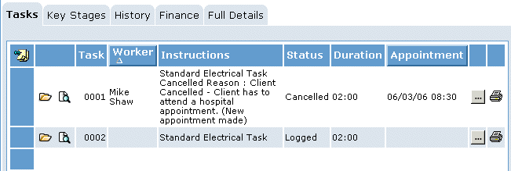
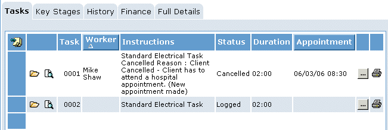

To cancel an appointment:
- Open the
- On the Tasks tab, click
 next to the task for which you want to cancel the appointment.
next to the task for which you want to cancel the appointment. - On the Appointment Details tab,
- Click
 .
.


Once you have made an appointment, you cannot change the date or time-slot of the appointment. However, you can cancel the appointment. When you cancel the appointment,
next to the task for which you want to cancel the appointment.
.